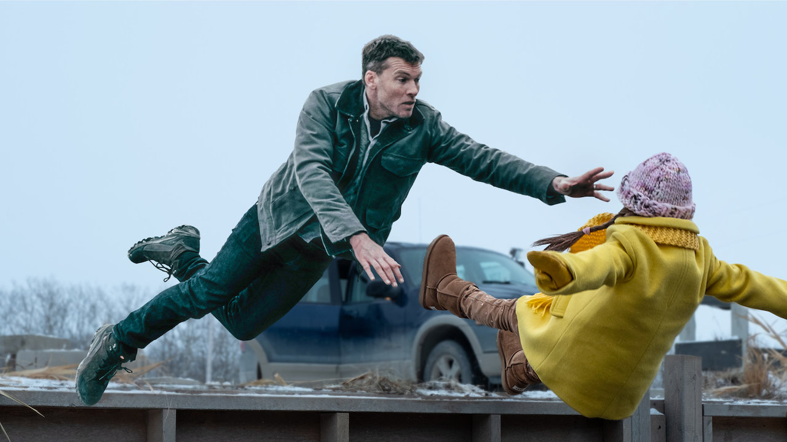
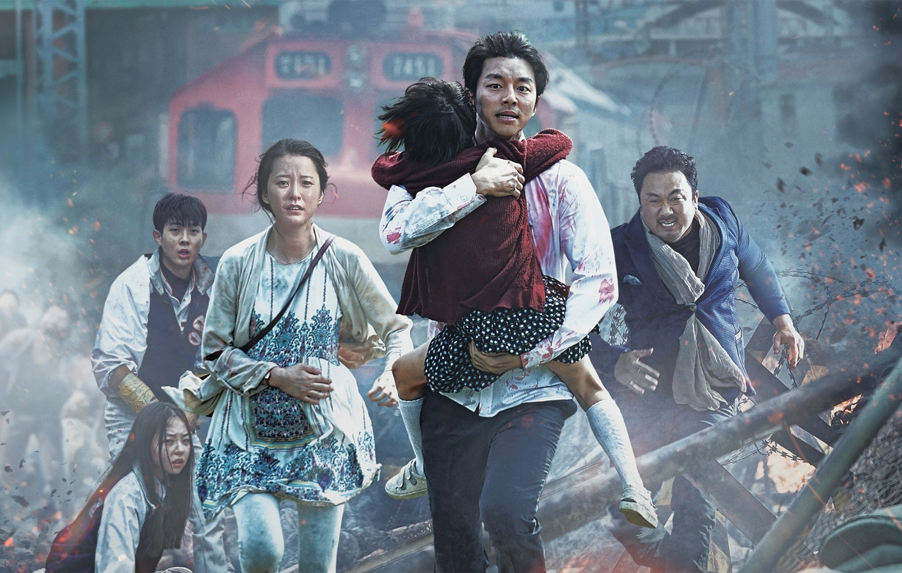
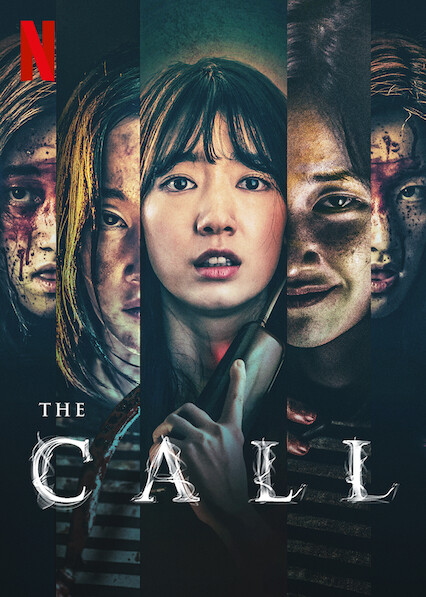

|  |
 |
 |
1) my brainstorming prosses was mostly on paper. I drew my prototype on paper and wrote down all the codes I would need to use. for example, the coding for creating a table.
2) I learned how to add links to pictures so when I clicked the images, it would take me to anotgher webpage.
3) The hardest part of the project was adding the links to the images.
4) To resolve this, I read over the examples to see what I did wring and corrected any typo's I made.
5) one thing I changed after reciving peer feedback was the layout of my images. I centered them instead of keeping them the left
6) I would probably change the banner but I couldnt because we had no time to make huge changes.
7) The skills I learned through this project can help me in future jobs of web design and computer design.
8) The part that was most fun for me was createing my table and costomizing my websites.